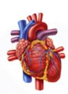

<!DOCTYPE html>
<html>
<head>
	<meta charset="UTF-8">
	<link href="../css/style.css" rel="stylesheet" />
</head>
 <body>
<script type="text/javascript" src="../../practise_code.js"></script>
<script>
//Human Body

var questions = [
["What is the minimum required hemoglobin","12gm/dl" ,"8.5gm/dl" ,"16gm/dl" ,"30/gm/dl","A"],
["when trying to maintain a balanced diet it is important to","EAT FROM ALL OF THE FOOD GROUPS","EAT MORE FRUITS AND VEGETABLES","SKIP BREAKFAST","DRINK ONLY MILK AND WATER","A"],
["In human body,the group of similar cell specialized to perform specific functions are called as","ORGANISMS","NERVES","TISSUE","ORGAN SYSTEM","C"],
["Night blindness caused due to deficiency of vitamin","VITAMIN A","VITAMIN B","VITAMIN C","VITAMIN D","A"],
["Which one is the largest gland in the human body","PANCREAS","GALL BLADDER","LIVER","PITUITARY GLAND","C"],

["Which of the following not a sense organ","BONE","NOSE","TONGUE","SKIN","A"],

["How many bones make us our skeleton","206","306","406","506","A"],
["Which type of blood cells helps us to fight diseases","red blood cells","white blood cells","both","none", "B"],
["Leukemia is a diseases of","blood","skin","nerves","lungs","A"],
["Approximately how many times does your heart beats every BD hours","around 1000 times","around 5000 times","around 2000 times","around 100000","D"],
["Your lever is the largest solid organ for live fit and healthy how many times around it should functions","500","5000","100","1000","A"],
["Lack of what causes diabetes","Sugar","insulin","vitamin","calcium","B"],
["Food are normally digested in the","lever","stomach","large intestine","small intestine","D"],
["Your rotater cuff is a group of muscles and tendons found in your","knee","shoulder","legs","hand","B"],
["On average women’s noses is bigger than the men’s noses","True","false","some times","none of them","B"],
["Which of the following diseases caused by virus","small pox","malaria","typhoid","fever","A"],
["While running our cheeks get red but not legs, Why?","Actually, it depends on person to person","Blood flow increases to meet the increased demand of oxygen","Blood flow in the legs while it increases in the face","Mystery","B"],
["When we smell good food, our mouth starts watering, Why ?","The pancreas secrete juices","Brain asks mouth to produce saliva in order to digest the food","Mystrey","None","B"],
["The boy in a picture found the vegetable to be very bitter. Which portion of tongue found out that it was bitter?","Part A","Part B","Part C","Part D","A"],
["The average adult human brain weighs is about","2.4 kg","3.5 kg","1.5 kg","5 kg","C"],
["A dietitian had come to school. Children were surprised when doctor said <B> some fruits and vegetables should be eaten raw</B>.","Potatoes & Tomatoes","Tomatoes & Carrots","Potatoes & Carrots","Dal & Rice","B"],
["Recognize the organ in the below picture and the system it belongs to - <BR>","Heart, Respiratory System","Lungs, Respiratory System","Heart, Circulatory System","Lungs, Circulatory System","C"],
["What is the largest gland in human body","lever","stomach","heart","kidney","A"],
["Which is the smallest bones in human body","leg bones","fingers bone","straps","knee bone","C"],
["Malaria is diseases which effect the","heart","lungs","spleen","kidney","C"],

["People in very cold places live in","Stilt house","Wooden house","Igloo","House of mud","C"],

["Which one of the following systems is responsible for transporting nutrients in whole part of our body? ","Nervous system","Circulatory system","Muscular system","All of these","B"],
]

</script>
<table><tr>
  <td class="timer-pic"></td><td class="timer-text"><p id="demo" ></p></td> 
</tr>
</table>
<h2 id="test_status"></h2>
<div id="test"></div>
</body>
</html>
